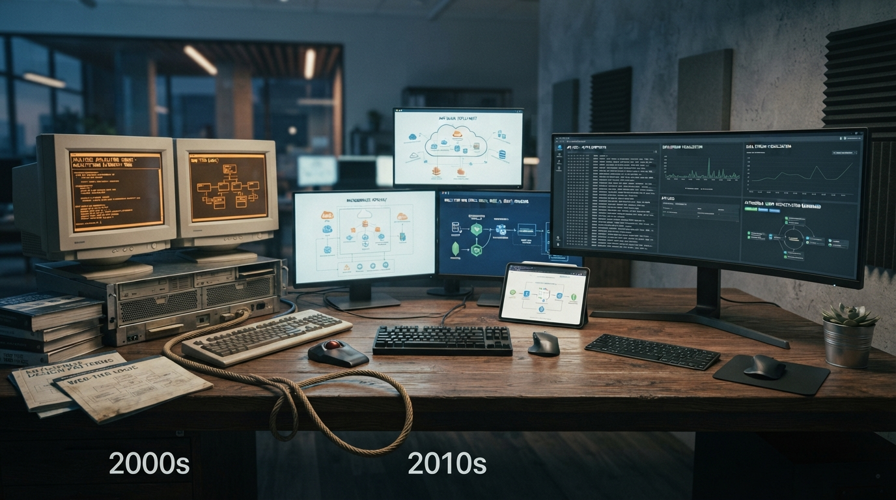

Série Especial: Ensaio em Três Atos
Série: A Evolução Cíclica da TI — Do "Angu de Caroço" à Era dos Agentes Autônomos

Quem já acumula mais de duas décadas de estrada na engenharia de software costuma olhar para os alarmismos de mercado com um ceticismo sereno. A história da computação não é uma linha reta de progresso infinito, mas sim uma espiral cíclica marcada por fases de exuberância irracional, hipertrofia de camadas intermediárias e correções implacáveis de rota.
Nesta trilogia em três atos, percorremos essa trajetória a partir da experiência prática de quem viveu a construção de sistemas desde os anos 2000 até a chegada dos agentes autônomos:
- Ato I (1990 – 2012): A era dos fundamentos, a euforia da bolha ponto-com e o aprendizado denso no servidor — o clássico "angu de caroço" de JSF, JSP, servlets e ciclo de vida de componentes.
- Ato II (2010 – 2024): A nuvem, a explosão do ecossistema JavaScript, o inchaço de dependências acidentais no navegador e a ressaca pós-pandemia com o fim do dinheiro barato.
- Ato III (O Futuro Agora): O colapso da separação artificial front/back, o fim do CRUD humano repetitivo e o nascimento da web para robôs e agentes locais.
Estrutura dos Episódios

A Era dos Fundamentos, a Bolha e o "Angu de Caroço" do Servidor
19/11/2026 · Episódio 01
A Nuvem, o Boom da Pandemia e a Ilusão das Camadas Desnecessárias
23/11/2026 · Episódio 02
A Ruptura da IA, o Fim do CRUD Humano e a Web para Agentes
27/11/2026 · Episódio 03Dicionário de Termos Técnicos e Negócios (para leigos)
Glossário com definições diretas dos conceitos e jargões recorrentes nesta trilogia para facilitar a leitura de decisores e entusiastas:
- Complexidade Acidental
- Dificuldades e problemas que nós mesmos criamos ao empilhar ferramentas e frameworks pesados demais para resolver tarefas simples, diferindo da complexidade real do problema de negócio.
- Server-Side Rendering (SSR)
- Processamento centralizado onde o servidor da empresa calcula as regras e monta a página pronta antes de enviá-la para o navegador do cliente.
- Front-end vs. Back-end
- Front-end é a camada visual (botões, menus e telas); Back-end é o motor nos bastidores responsável pela lógica de negócio, segurança, persistência e integridade dos dados.
- Agentes Autônomos de IA
- Assistentes de inteligência artificial locais capazes de entender linguagem natural e realizar tarefas operacionais complexas diretamente em APIs sem necessidade de cliques manuais.
- M2M (Machine to Machine)
- Comunicação e autenticação automatizada direta entre computadores e sistemas, sem a necessidade de intervenção de uma pessoa preenchendo formulários.
Nota: Ensaio de arquitetura e análise histórica de mercado (Fiction-Based Technical Insights & Engineering Realism).